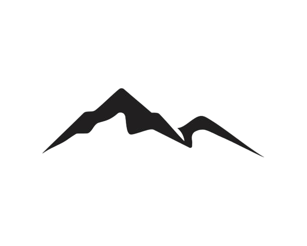

T A T R Y
s e r c e p o l s k i c h g ó r
„Widziałem góry większe, wspanialsze i bardziej majestatyczne.
W góry piękniejsze od Tatr jednak nie wierzę”.
Stanisław Zieliński

Nazwa „Tatry” wywodzi się od starosłowiańskiego słowa „ter” oznaczającego skałę, lub od galicyjskiego „tertaro” oznaczającego wzgórze.
Najwyższym wodospadem Tatr jest Ciężka Siklawa, która ma ok. 100m i jest po słowackiej stronie.
Największym jeziorem w całych Tatrach jest Morskie Oko, jego powierzchnia wynosi 34,54 ha, natomiast najgłębszy jest Wielki Staw Polski, który ma 79,3m głębokości.
Pierwsze odnotowane wejście na Rysy było 30 lipca 1840 roku, dokonali tego Eduard Blásy z przewodnikiem Jánem Rumanem Driečnym starszym.
10 000 lat temu w Tatrach występowały lodowce.
Proces formowania się Tatr rozpoczął się 200 milionów lat temu.